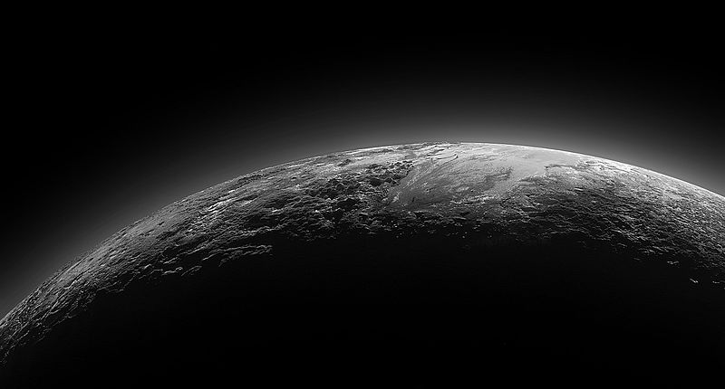

Plutón
 Características físicas
Características físicas
| Masa | 1.25x10^22 kg |
| Radio | 1185 km |
| Distancia relativa al Sol | 39.264 UA |
| Tiempo en completar la órbita | 248 años y 197 días |
| Temperatura media | -229.1ºC |
| Número de satélites conocidos | 5 |
Plutón, designado (134340) Pluto, es un planeta enano del sistema solar situado a continuación de la órbita de Neptuno. Su nombre se debe al dios mitológico romano Plutón (Hades según la mitología griega). En la Asamblea General de la Unión Astronómica Internacional celebrada en Praga el 24 de agosto de 2006 se creó una nueva categoría llamada plutoide, en la que se incluye a Plutón. Es también el prototipo de una categoría de objetos transneptunianos denominada plutinos. Plutón posee una órbita excéntrica y altamente inclinada con respecto a la eclíptica, que recorre acercándose en su perihelio hasta el interior de la órbita de Neptuno. Asimismo posee también cinco satélites: Caronte, Nix, Hidra, Cerbero y Estigia, los cuales son cuerpos celestes que comparten esa misma categoría. Su gran distancia al Sol y a la Tierra, unida a su reducido tamaño, impide que brille por encima de la magnitud 13,8 en sus mejores momentos (perihelio orbital y oposición), por lo cual solo puede ser apreciado con telescopios a partir de los 200 mm de abertura, fotográficamente o con cámara CCD. Incluso en sus mejores momentos aparece como astro puntual de aspecto estelar, amarillento, sin rasgos distintivos (diámetro aparente inferior a 0,1 segundos de arco). No fue hasta el año 2015 cuando la sonda espacial New Horizons pasó sobre el planeta y permitió apreciar por primera vez de forma nítida su aspecto real.
Propiedades de la atmósferaPlutón posee una atmósfera extremadamente tenue, formada por nitrógeno, metano y monóxido de carbono, que se congela y colapsa sobre su superficie a medida que el planeta se aleja del Sol. Es esta evaporación y posterior congelamiento lo que causó las variaciones en el albedo del planeta, detectadas por medio de fotómetros fotoeléctricos en la década de 1950 (Kuiper y otros). A medida que el planeta se aproximó, los cambios se fueron haciendo menores, disminuyendo cuando se encontró en el perihelio orbital (1989). Se espera que estos cambios de albedo se repitan, pero a la inversa, a medida que el planeta se aleje del Sol rumbo a su afelio.
 Exploración espacialPlutón fue el segundo planeta enano en ser visitado por una sonda espacial, tras Ceres. El 6 de julio de 2015, la misión New Horizons de la NASA se encontraba a nueve millones de kilómetros de él, el 13 de julio se encontraba a 768 000 kilómetros de la superficie obteniendo la imagen más detallada del cuerpo celeste hasta su previsto máximo acercamiento. Las observaciones científicas empezaron cinco meses antes del acercamiento y continuaron al menos un mes después del mismo, teniendo como objetivo caracterizar la geología y la morfología de Plutón y algunas de sus lunas, así como estudiar la composición de su superficie y de su atmósfera.